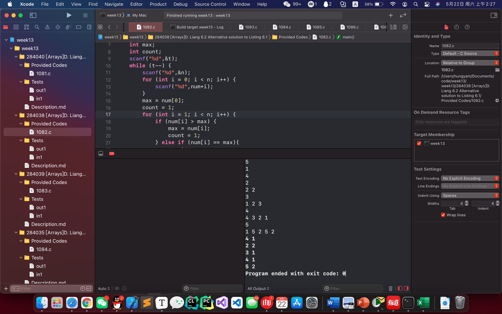

intmain(){ int t; //测例次数 int n; //数列个数 int num[100]; //储存数列 int max; //记录最大值 int count; //记录最大值个数 scanf("%d",&t); while (t--) { //测例循环 scanf("%d",&n); for (int i = 0; i < n; i++) { //数列存入数组 scanf("%d",num+i); } max = num[0]; //初始化最大值 count = 1; for (int i = 1; i < n; i++) { if (num[i] > max) { //若有更大的数，则更新最大值，并重置个数 max = num[i]; count = 1; } elseif (num[i] == max){ //若有等于最大的数，个数加1 count++; } } printf("%d %d\n",max,count); } return0; }
Demo

6.3 Reversing the numbers entered
Mission requirements
输入一串指定个数的数列，反序输出
Code
1 2 3 4 5 6 7 8 9 10 11 12 13 14 15 16 17 18 19
#include<stdio.h>
intmain(){ int t; //测例次数 int n; //数列个数 int num[1000] = {0}; scanf("%d",&t); while (t--) { //测例循环 scanf("%d",&n); for (int i = 0; i < n; i++) { //顺序输入 scanf("%d",num+i); } for (int i = n-1; i > 0; i--) { //反序输出 printf("%d ",num[i]); } printf("%d\n",num[0]); //0号位另外输出，因为最后一个后为换行，不为空格。 } return0; }
If you like this blog or find it useful for you, you are welcome to comment on it. You are also welcome to share this blog, so that more people can participate in it. If the images used in the blog infringe your copyright, please contact the author to delete them. Thank you !